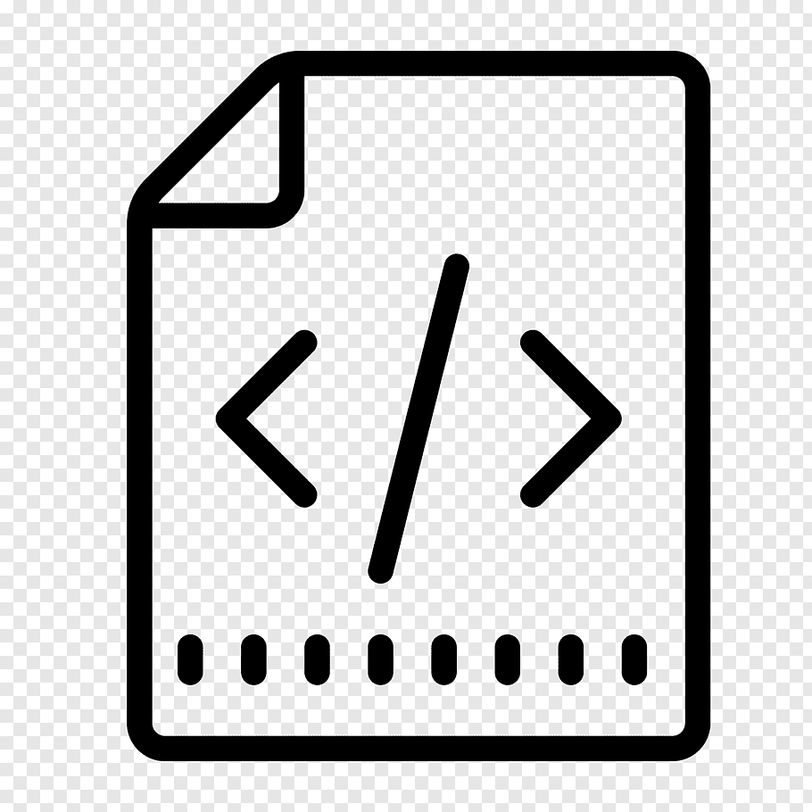
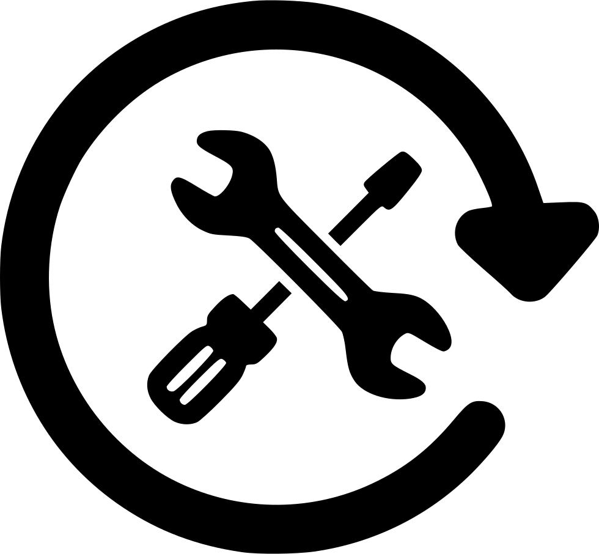
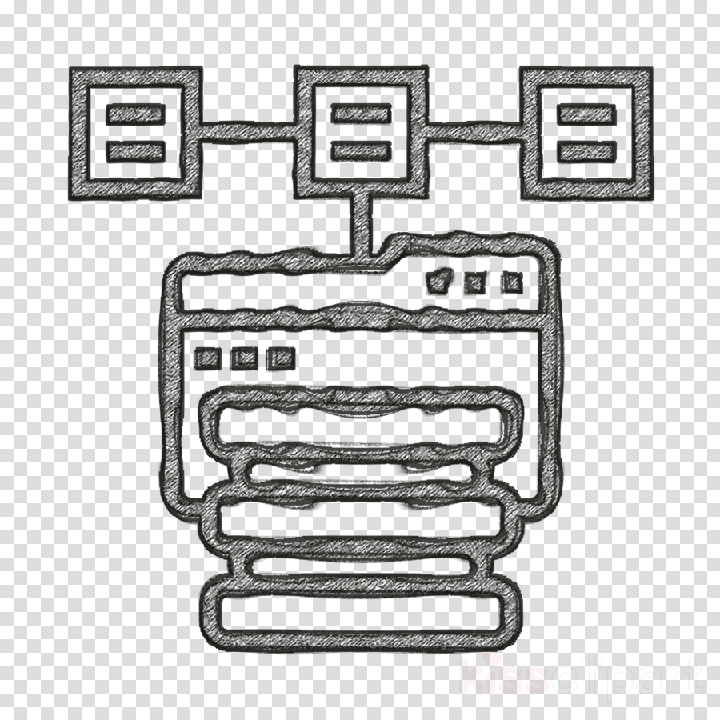
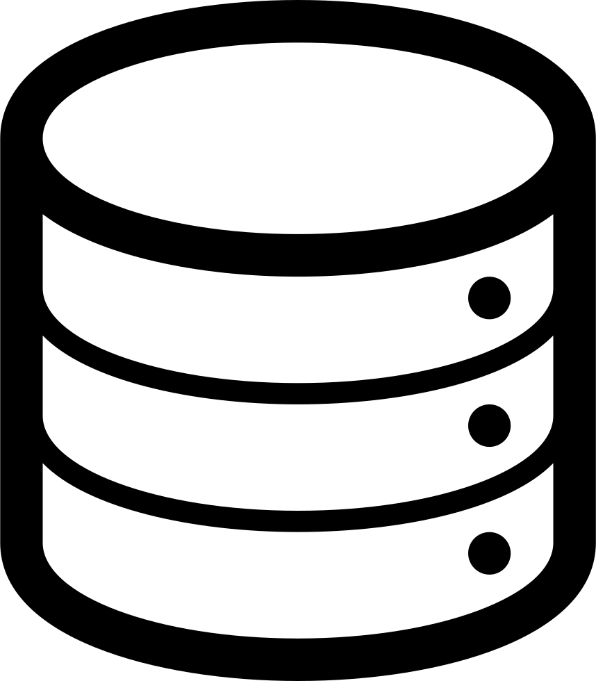
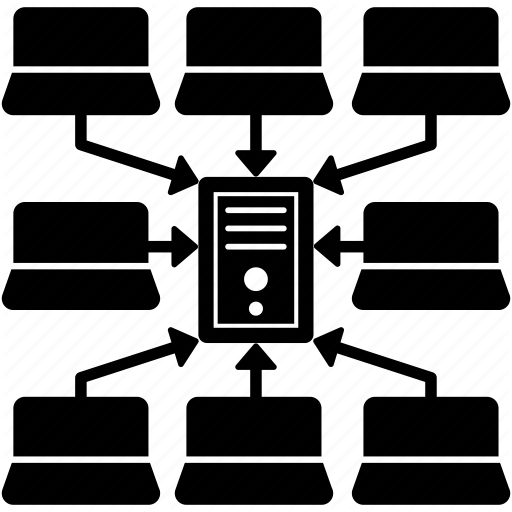
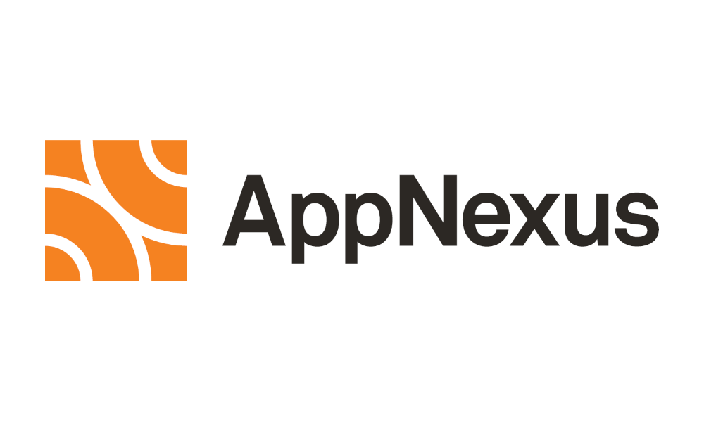

Cheng-Hsiu (Jash) Lee
Phone: 917-971-9551
Email: s905060@gmail.com
Location: Brooklyn, NY
Print: 
- Education
-
New York University, USA
Chinese Culture University, Taiwan
Master in: Computer Science
Bachelor in: Information Management
- Open Source Contribution
-
 GitHub
GitHub
 GitBook
GitBook
 DockerHub
SoundCloud
MixCloud
DockerHub
SoundCloud
MixCloud
- Skills
-
Languages: Backend: Frontend: Bash, Python Go, Python/Django jQuery, HTML5, CSS3, Bootstrap Load Balancing: Configuration management: Virtualization: LVS, HAProxy, F5, ProxySQL Ansible, Puppet Xen, KVM, Vagrant, Docker, Esxi  Operating System:
Operating System:Monitoring Tool:  Web Server:
Web Server:Linux (server), Windows (server), Mac OS (server), CoreOS Munin, Nagios, Zenoss, Zabbix, Graphite, New Relic, Collectd, OpsGenie Apache, JBoss, Wildfly(JGroup), Nginx (PHP-FPM) High Availability: Storage: CI/CD: Drbd, Keepalived, Heartbeat GlusterFS, Ceph, ZFS, NFS, Samba Jenkins, Concourse, Spinnaker Databases: Distributed Systems:  Computer Networking:
Computer Networking:PostgreSQL, MySQL, SQLite, MongoDB, Redis, Elasticsearch (ELK), Aerospike, Openldap, ClustrixDB, IRONdb Hadoop, Spark, Yarn, Kafka, Zookeeper, Mesos, Kubernetes, Cassandra, ScyllaDB, HBase, Hive, Presto, Zeppelin, QFS, Imply, Druid, AB-Initio, TigerGraph CDN, LAN/WAN/ Wireless Networking, DNS, NAT, Firewall, TCP/IP, IPSec, VPN, Routing, Switching, SDN, Cisco & Juniper devices  Cloud Infrastructure:
Cloud Infrastructure:Version Control: Security: AWS, Azure Git, SVN, Bitbucket LDAP, Kerberos, SSL, HTTPs - Experience
-
 Microsoft Principal Software Engineering Manager, Jan 2023 - Present
Microsoft Principal Software Engineering Manager, Jan 2023 - Present- WebXT, Ad Engineering, MSN, Bing, Xbox, Microsoft Store, Netflix etc
- Help the company increase revenue and reduce cost
- Help the company empower every person and every organization on the planet to achieve more.
Microsoft Sr. Manager, Technology, June 2022 - Jan 2023- Hybrid cloud big data infrastructures and services
- Oversee multiple teams across the globe to provide 24/7/365 services
Xandr Sr. Manager, Technical Operations (Big Data), Dec 2021 - June 2022
- Hybrid cloud big data infrastructures and services
- Oversee two teams across the globe to provide 24/7/365 support
Xandr Manager, Technical Operations (Big Data), April 2019 - Dec 2021
- Oversee day-to-day management of the team within big data infrastructures and pipeline services.
- Take responsibility for the management and implementation of multiple projects for the team.
- Ensure services and projects related priorities are consistent with company objectives.
- Identify challenges and drive cross-functional solutions, continuously increasing operational efficiency.
- Hire, coach and develop a team of technical staff to meet objectives.
- Mentor engineers on career development and performance improvement.
- Engage and retain motivated employees that grow with the organization.
- Grew the size of team from 3 to 10 members.
AppNexus Senior Systems Engineer (Big Data), Dec 2015 - April 2019
- Act as team lead to coach and guide new team members.
- Monitor, maintain and provision components of the Data Systems Platform.
- Perform software upgrades on the components of the Data Systems Platform.
- Work with the Data Engineering team to help design and implement the next iteration of scaling.
- Work closely with the systems performance, systems operations, and network engineering teams as needed to ensure high performance and availability.
- Work with the Data Engineering team to evaluate Open Source and Commercial software and hardware solutions.
- Develop and implement tools to automate aspects of managing the Data Systems Platform, including upgrades where appropriate.
- Participate in prototyping and proof-of-concept system development and benchmarking.
- Manage storage restructuring as required.
- Participate in on-call rotation responding to alerts and systems issues.
- Manage user access and resource allocations to Data Systems Platform.
New York University Technical Consultant (Part-Time), Jun 2015 - Dec 2015
- Make everyone’s life easier.
- Research in Unikernels solutions.
- Solving private cloud issues.
Nielsen Site Reliability Engineer, Apr 2015 - Dec 2015
- Automate everything.
- Make sure every service is up and running with highest performance.
- Design and build internal automation tools.
- Integrated LVS system reducing 80% of overall Load Balancing cost.
- Work on integration of CoreOS, Docker, Mesos, Kubernetes, ZooKeeper, Yarn, Hadoop, Spark, Kafka.
- Rewrite Python scripts in Go.
- Reduced 80% of overall SMS Alert cost.
 eXelate Site Reliability Engineer, Jan 2015 - Apr 2015
eXelate Site Reliability Engineer, Jan 2015 - Apr 2015- Troubleshoot and analyze hardware, networks, application, and storage/DB related issues across 7 data centers (Physical/Virtual).
- Cohesively work within a team to manage the monitoring and stability of our Unix environment.
- Collaborate with R&D and Analytics departments on design concepts to help right-size technical infrastructure solutions.
- Build, configure, and proactively automate systems and services.
- Install and support in-house, open-source, and 3rd party applications across multiple vendor platforms.
- Provide peer support to other System Administrators and End Users.
- Building internal automation tools (API and WebApp).
- Twilio API text alert integration
New York University Technical Lab Manager, Aug 2014 - Jan 2015
- Leader of open source oriented technical team, (3*Web Developers, 3*System Engineers, 1*Site Reliability Engineer, 1*Security Engineer, 1*DevOps). https://github.com/CSELabs-team
- In charge of the departmental data center.
- Planning for Site Reliability and High Availability
- General IT support, collaborative with school IS department.
- Departmental private cloud service integration.
- Development of departmental Website.
New York University Developer, Feb 2013 - Aug 2014
- Designed and built new rack infrastructure from UPS (IP-PDU) to IPKVM and all production and development servers.
- System Troubleshooting, Performance Tuning, Networking, Monitoring and Inspection of log files.
- Authored technical documents and Bash Scripts.
- Debugging and maintaining of PHP5 + jQuery codes.
- Ubuntu server administration.
- Open source Xen server administration.
- Network administration.
- Private cloud integration.
- Database maintenance.
- Reverse engineering of original Vlab.
- Redesigned the architecture of Vlab.
- Introduction to Vlab system and training for College Faculty.
- Collaboration with five team members.
- ### Vlab is a private cloud design/platform of a Virtual Laboratory for Information Assurance Education and Research, founded by NSF. ###
China Engineering & Mercantile Co., Ltd. Senior MIS Engineer, Sept 2011 - Aug 2012
MIS Engineer, Sept 2006 - Aug 2010
Jr. MIS Engineer, Sept 2002 - Sept 2006
- Design of Customer Feedback system (Web based) in ASP. Net.
- Design of Quotation system (Web based) in ASP. Net.
- Design 2nd version of Company’s Website in PHP5 + jQuery based on LAMP.
- Design 2nd version of On-line Customer Feedback system in Python.
- Design 2nd version of On-line Quotation system in Python.
- Design of Company’s Official Website in HTML5.
- Linux Server, Windows Server and Mac OSX Server administration.
- Virtualization administration.
- Network administration.
- General IT support.
The Republic of China Army (Taiwan) Second Lieutenant, Aug 2010 - Jul 2011
- Deputy Company Commander: planning scheduling and supervising of the entire company’s routine jobs and daily training.
- Platoon leader: management, organization and supervising of two platoon’s routine jobs professional training.
- Hobbies
-
- EDM composer and Dj for eight years. I listen to Classical music as well.
- Ping Pong and Billiards lover.